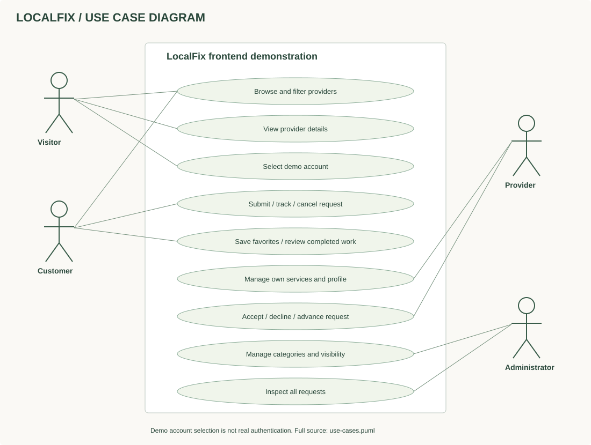
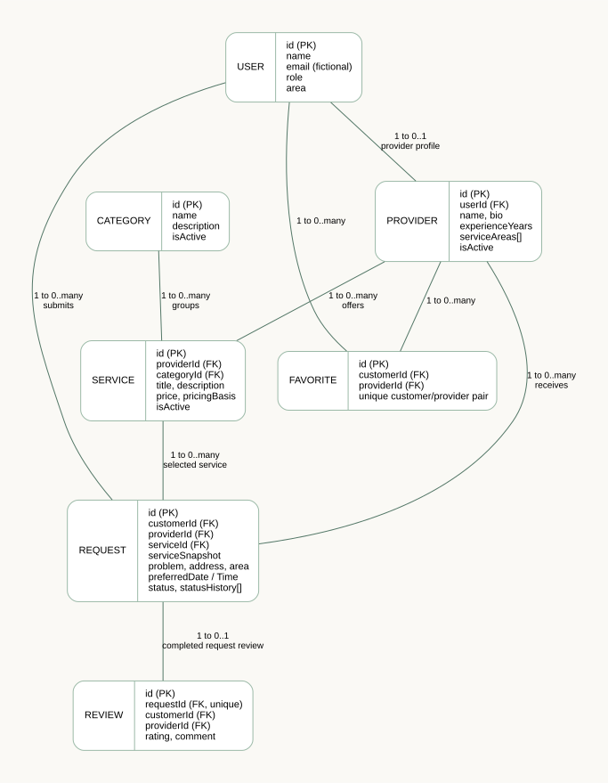
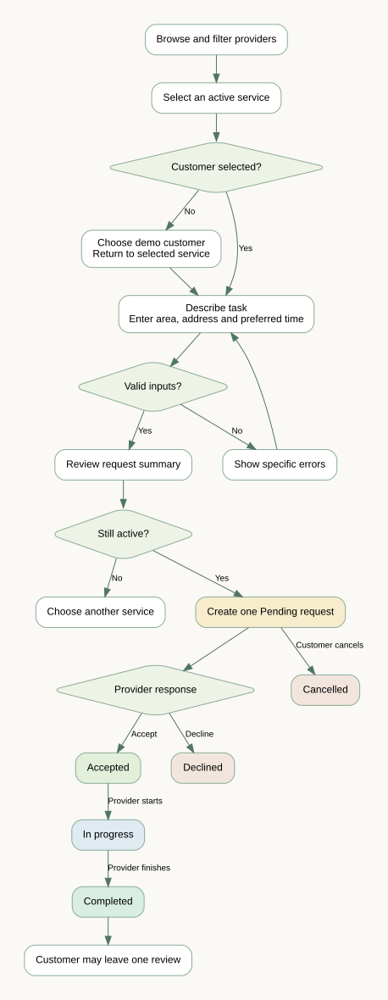
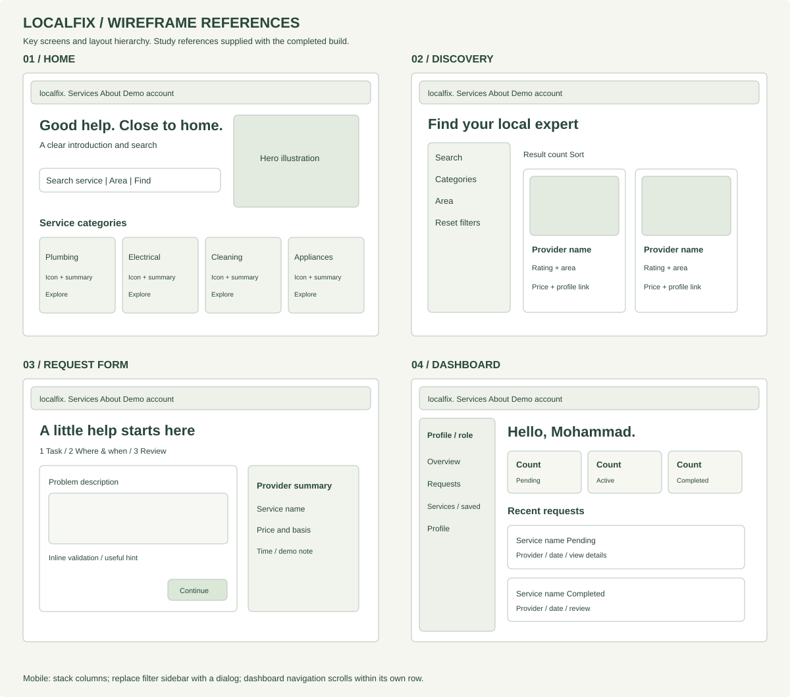

LOCALFIX / COURSE PROJECT PACKAGE
A JavaScript + React frontend marketplace with Tailwind CSS and Motion for React.
Open the project README for setup. Run npm install then
npm run dev inside the localfix folder. This guide can be
opened directly; the app itself needs a local server.
Markdown files can be read in any editor or previewed in VS Code. Actual interviews, team details, instructor approval and final repository links must be completed by your team.

Related arrays use IDs as conceptual primary/foreign keys. There is no database server. Reviews also reference the customer and provider from their request.


These wireframe exports document layout hierarchy for study and presentation; they do not claim earlier instructor approval.

Customer Mohammad Abdali requests Ahmad Rahimi's plumbing service. Switch through the header to provider Ahmad, accept, start and complete. Switch back to Mohammad to review. Refresh to demonstrate persistence. Try admin visibility controls, then reset the demo.
All service profiles and prices are fictional. No real provider is contacted. No passwords, payments or backend are used.